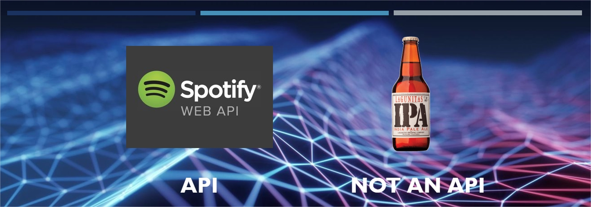

A Pint of API
Definition
API stands for Application Programming Interface. In other words, it’s an interface that makes it easier for developers to program different applications.
Some examples
- Booking.com
- Your computer’s file system
RESTful APIs
These are APIs that follow the REST architectural style. REST stands for REpresentational State Transfer, and it makes it easier for systems to communicate between one another. By using a REST interface, different clients can hit the same endpoints and perform the same actions to obtain the same responses.
Therefore, the code that implements the server and the one that implements the client can be developed independently and without previous knowledge of each other. Changes to these codebases can be performed at any time without affecting the other codebase, as long as each side knows what format to expect in the data.
Systems following this architectural paradigm are stateless, which means that the server and the client do not need to know anything about the state of their counterpart. This is enforced with the use of resources, which are any object, document, or element of the Web. REST systems interact through standard operations on these resources.
Communication
In the REST architecture, the client sends a request that retrieves or modifies a given resource, and the server sends a response to the request.
Requests
A request generally consists of:
- an HTTP verb defining the operation to perform
- a header, containing metadata about the request
- a path to a resource, also called an endpoint
- an optional message body with a data payload

HTTP verbs
The basic verbs to interact with resources over HTTP are:
- GET — to retrieve a resource or collection of resources
- POST — to create a new resource
- PUT — to update a resource
- DELETE — can you guess?
Endpoints
An endpoint is a path that points to a resource. These are normally hierarchical and tend to be quite descriptive, so that the client can understand what resource they are accessing even if they have never seen that specifiv path before.
For example, take https://api.github.com/users/gonz4lex/repos. This points to the repos endpoint, which stores information about the repositories of the user with the name gonz4lex (that’s me!), and is used, for instance, in a GET request to retrieve information about the specific resource.
Responses
Responses from the server generally contain the data payload requested by the client as well as response metadata, such as status code and content type.
Response codes
Responses contain information of the success status of the operation, to inform the client of its success (or failure). There are many such codes, but it’s only important to know the most common ones and learn how they can be used.
| Status code | Meaning |
|---|---|
200 (OK) |
Succesful standard HTTP request. |
201 (CREATED) |
Succesful request that results in the creation of an item. |
204 (NO CONTENT) |
Succesful request that returns an empty response body. |
400 (BAD REQUEST) |
Unsuccesful request due to client error such as bad syntax |
403 (FORBIDDEN) |
Unsuccesful request due to lack of authentication or credentials. |
404 (NOT FOUND) |
Unsuccesful request because the resource could not be found. |
500 (INTERNAL SERVER ERROR) |
Generic response to unexpected failure when no futher info is available. |
References